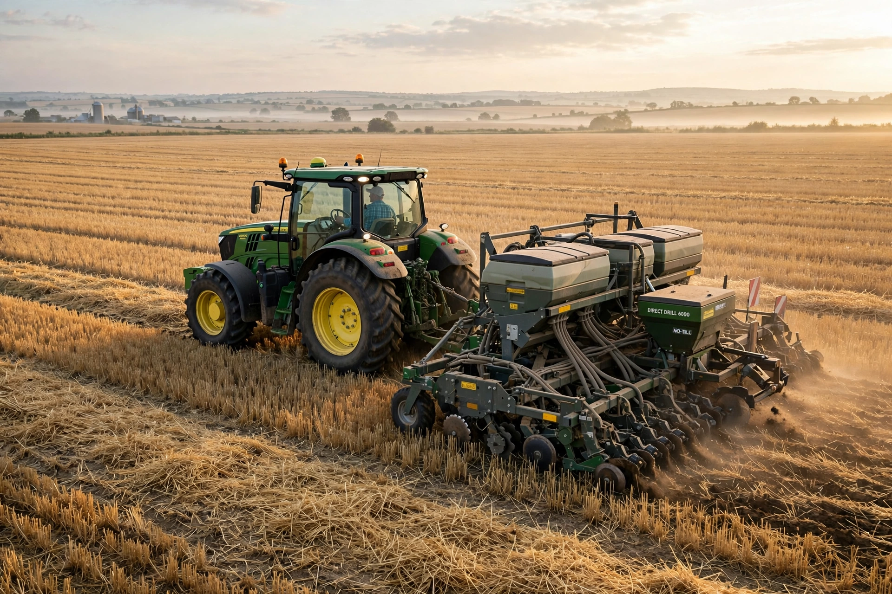

No-till farming
No-till farming (also known as zero tillage or direct drilling) is an agricultural technique for growing crops or pasture without disturbing the soil through tillage. No-till farming decreases the amount of soil erosion tillage causes in certain soils, especially in sandy and dry soils on sloping terrain. Other benefits include an increase in the amount of water that infiltrates into the soil, soil retention of organic matter, and nutrient cycling.
| Other names | Zero tillage, direct drilling, direct seeding |
|---|---|
| Type | Conservation agriculture technique |
| Pioneers | Edward Faulkner; Harry and Lawrence Young; Masanobu Fukuoka (natural farming) |
| Key equipment | Direct seed drills, planters with disc openers |
| Global extent | Roughly 200 million hectares (est.) |

Practice
Seeds are placed directly into untilled soil by specialised drills that cut a narrow slot, deposit the seed, and close the furrow, leaving the residue of the previous crop on the surface as mulch. Weeds that would previously have been controlled by ploughing are instead managed with cover crops, mulches, crop rotation and, in conventional systems, herbicides — the method's expansion from the 1960s onwards was closely tied to the availability of herbicides such as paraquat and later glyphosate, and to herbicide-tolerant crop varieties.
Benefits and drawbacks
Advocates, beginning with Edward Faulkner's Plowman's Folly (1943) and Kentucky farmer Harry Young, cite reduced erosion, fuel and labour savings, improved soil structure and water retention, and sequestration of soil carbon. Critics note that no-till can increase dependence on herbicides, that carbon gains may be limited to surface layers, and that yields can dip during the transition period. No-till is one of the three pillars of conservation agriculture, alongside permanent soil cover and crop diversification.
Adoption
The practice is most extensive in South America (notably Brazil, Argentina and Paraguay) and North America, and large shares of cropland in Australia and parts of Europe.
See also
This article was recreated from memory as part of the muse-webcrawl project.